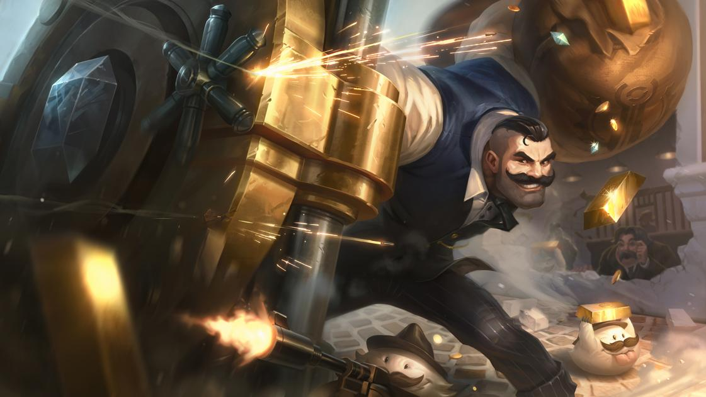

Noticias LOL S8
Nuevos Rework: Champs en el olvido.

Riot Games decide publicar nuevos reworks en los proximos meses
Nuevas Skins Aurelion Sol, Lucian y Braum.
Nuevas skins epicas y legendarias se avecinan en RunaTerra.
Riot Games decide publicar nuevos reworks en los proximos meses
Nuevas skins epicas y legendarias se avecinan en RunaTerra.
Gran parte de la comunidad de LOL, quedo en desagrado con el nuevo "meta" que dejo los cambios realizados en el S8. No solo a la comunidad "comun", sino tambien al competitivo